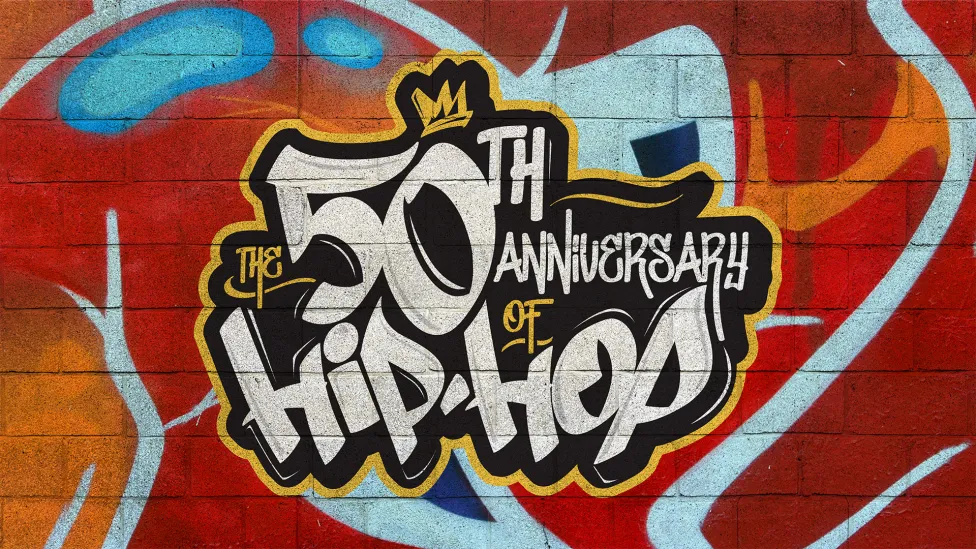

There are all sorts of rappers that you can choose from that best fit your music taste. Rap has all different sorts of styles inside this big genre.
If you like the old school stuff, the best options for you are Tupac Shakur, Nas, The Notorious B.I.G, and MF DOOM.
If you like the new style of rap music, the best options for you are Lil Uzi Vert, Juice WRLD, Gunna, and Travis Scott.
If you like a little R&B, the best options for you are Drake, A Boogie Wit da Hoodie, SZA, and Brent Faiyaz.
If you like the classics, the best options for you are Kendrick Lamar, Future, A$AP Rocky, and Eminem.
And there are a ton of other great artists that aren't mentioned.
Rap music probably has the biggest scope of any music genre.
There endless amounts of artists that are coming out that could be future G.O.A.T's.